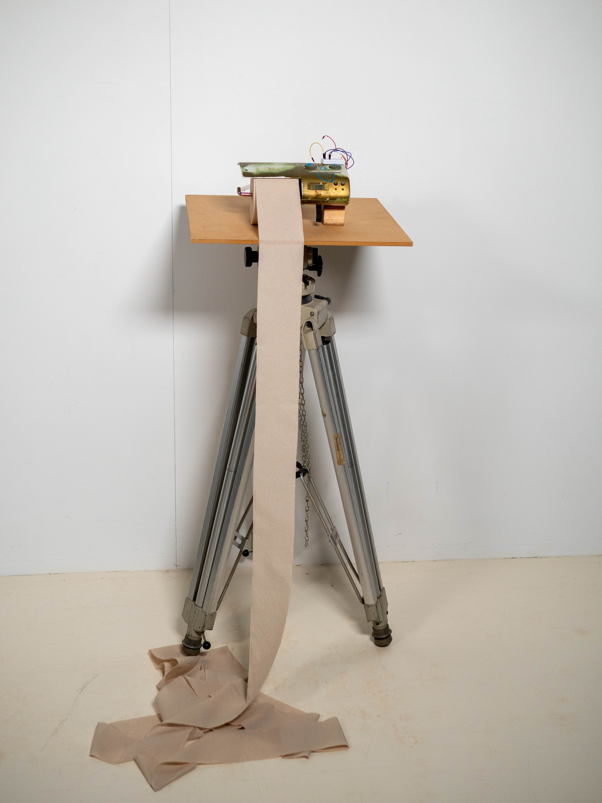

Circuitbent Poopsynth (2025)
A custom-built synthesizer made from a toilet paper holder radio. This instrument was made to reinvent time spent in the washroom that would otherwise be wasted scrolling on social media. it uses a breadboard and jumper wires to short out different connections on the circuit board, creating a variety of unique and unpredictable noisy sounds.
